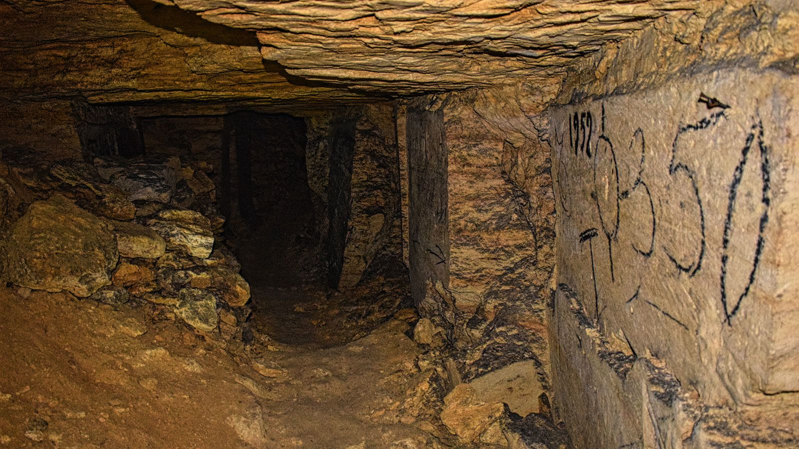

Odessa
Odessa ligt op de heuvels rondom een kleine haven en is de op vier na grootste stad in Oekraïne. Het is de grootste stad aan de Zwarte Zee.
- Odessa is een stad in het zuiden van Oekraïne.
- Odessa is de belangrijkste havenstad van het land en ligt aan de Zwarte Zee.
- Wat bevolking betreft is Odessa de derde stad in Oekraïne
Bezinswaardigheid
- potjomkintrappen
- Odessa National Academic Theater of Opera and Ballet
- Odesa Dolphinarium Nemo
- Taras Shevchenko Park
- Deribasovskaya Straat
Lokale activiteit
Odessa National Academic Opera and Ballet Theater, Deribasovskaya Street, Walking Tours, City Tours. For personalized recommendations, try our AI trip-planning product.

Wild Catacombs Odesa By Ukraine by LocalsTravelers who enjoy history, archeology, and off-beat experiences will enjoy this tour of the Catacombs of Odessa. You'll explore the underground world with a guide, who will make sure you don't get lost in the labyrinthine corridors, and tell you all about their history. A fun excursion that you're sure to remember.
Primorsky Boulevard is one of the main symbols of Odessa and favourite places to walk. There are monuments of Pushkin and Duke de Richelieu facing the famous Potemkin stairs and the city funicular.

Pryvoz Market, located at 14 Pryvozna Street, is the largest food market in Odessa